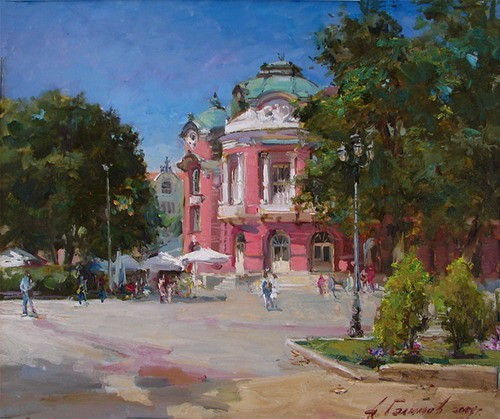

Prose
The Numbers

I watch the world map in my head, mottled with patches of different sizes and colours. I zoom in on the lion-shaped outline of Bulgaria.
Every city is a pin – some barely pierce the surface, others puncturing the map with their weight. I zoom in on Varna’s coastal districts, whose contours along the shore sink into the Black Sea.
Most of the houses in ‘Maksuda’ – the Gypsy quarter, as everyone calls it – huddle along the slope in a low, uneven mosaic of brick, stone and cracked plaster. The streets cross right by the transformer station, where people have lined up in a long, bending queue. The year is 1966.
The little blonde girl is eight years old, and it is just after six. It is still dark, and the only street lamp casts a yellow circle onto the uneven tarmac, where people shift from foot to foot to keep from freezing. The girl’s name is Stanimira, and she is queuing for milk. Sleepily, she gazes at the lamp, which looks to her like a looming giant of light, and begins counting the people ahead of her one by one. She works out that she is eighteenth in line, with three people behind her. She thinks that is actually quite good, because she won’t have to wait as long as yesterday – there were twenty-four people ahead of her then.
Her fingers are almost blue with cold, and she balls them up inside the sleeves of her mother’s short black coat – the one with only a single pocket, on the left. The transformer station hums steadily behind her, and she imagines that the sound gives off warmth, even though she can’t feel it. It is minus five degrees – that, too, is much better than yesterday.
At seven, the lorry will pull up by the kiosk, the driver will unload the crates onto the pavement, and the comrade in the red apron will drag them inside across the concrete floor, while the dull clink of the bottles drowns out the hum of the transformer station. Stanimira will take the two empty bottles, washed the night before, out of her string bag and hand over the one-lev coin, warm from her palm. Comrade Ginka will give her forty stotinki back and put two bottles of milk in the bag without a smile. Stanimira will work out in her head that the change will be enough for another bottle tomorrow. By then the queue behind her will already stretch all the way to the corner, and the milk will run out before eight.
The glass bottles will sway and clink in the string bag, as they do every morning, while Stanimira climbs the slope and silently says goodbye to the bright giant with the yellow eye. When she gets home, she will take out of the fridge the wrapping paper with the violet stamp, in which seven frankfurters are wrapped. She will read the label once again – ‘Varna Meat Plant’, with the mysterious ‘BDS’ circling round the lettering. She will wake her younger brother and sister and get them dressed while she waits for her father to slice the bread and the frankfurters.
At half past seven, she will hand her father one of the bottles, and he will peel off the foil cap with his fingernail. The milk will glug as he pours it evenly into the four glasses, gripping the bottle firmly with the three fingers left on his right hand. Stanimira will be putting the second bottle away in the fridge door, for the evening, while the youngest checks whether the glasses really hold equal amounts. The four frankfurters will soon be gone, and the father will wrap the remaining three back up in the wrapping paper and put them in his coat pocket, to take to the hospital after work. At eight, he will set off with a heavy, hurried stride down the slope to the bus stop, where he will wait for the number five bus to the carpentry workshop at the ‘Odesos’ ship repair yard.
By then, Stanimira’s mother will already be having breakfast. Most often they bring her a slice of soft white bread with a little butter and two pieces of dry-cured salami, sometimes a cup of tea and sugar as well. At around ten, the nurse will unwind the bandage from her leg and clean the wound while they chat. Two years have passed since the fire.
Once she is out of hospital, the mother will clean the wound every morning with Rivanol and apply an ointment whose heavy, tarry smell will cling to the walls. The father will go to the knitwear factory and bring home for her the large white sheets of card and the rolls of fabric for the labels, because the Party takes care to ensure that everyone works, including the disabled. She will sit for days on end at the table by the window, soldering iron in hand, running it along the ruler – burning into the fabric the precise edges of the rectangles over the white card. The room will smell scorched.
At half past six in the evening, on his way back from the hospital, the father will stop at the lottery kiosk, the green booth on the corner, just before it closes. There are six numbers, always the same. They are written on a slip of paper that he no longer needs to take out, because he knows them by heart. He will play the numbers once a week, for the Sunday draw, for the rest of his life.
*
I drink coffee at six in the morning, as I do every morning, and wait for my husband to wake up at seven. At eight, he will go to the gym with his personal trainer, and afterwards he will look over the company’s affairs and the tasks for the day. His long, slender fingers will leaf through the glossy notebook whose cover reads ‘Keep Calm and Play Football’.
I have taken on a translation job with a good deadline and a good rate, so I won’t rush. At ten, I will still be drinking coffee, slowly and lingeringly; I will glance at the white Swedish furniture, on which the soft orange light will keep falling, because I never switch off the wicker bedside lamp.
My daughter will be up by then, making herself breakfast. As it does every morning, her breakfast will contain thirty-five grams of protein, forty grams of carbohydrates and ten grams of unsaturated fat from half a teaspoon of olive oil and a quarter of a ripe avocado. Next year she will go off to Winchester to study literature and film.
But for now, it is still six in the morning, and I am drinking coffee with stevia and no milk. I watch the seagulls learning to fly on the roof opposite, and I know that in a week or two they will be gone. I watch them every year.
I am still looking at the rooftops opposite, and I zoom in on the picture – Varna, Maksuda, the transformer station, a single dot in the queue. My mother is eight years old and waiting for milk.
Now she is sixty-eight and lives out in the villa district, twenty-five minutes away by bus. Whenever she has business in town, she plays the numbers – if she remembers. They are written on a completely yellowed slip of paper, worn thin along the fold, which she keeps in the front pocket of her purse.
At around ten, my father will call. He has read all this, and he will reluctantly tell me that I have got the zooming wrong. He will say that my grandfather lost his fingers much later: he had stayed on after his shift to make a little chair for his first grandchild, who was three months old. Then he will add: back then, all carpenters were missing fingers. Before he hangs up, just to be sure, he will repeat it once more: we mustn’t forget that back then, all carpenters were missing fingers. And he will add that they didn’t have a fridge in those days.
I will say something appropriate in an even voice, say a quick goodbye, put the phone down on the coffee table and smoke two cigarettes one after the other. I will still be able to smell the pharmacy and tar in my grandmother’s room.
The first grandchild is me.
For sixty years, the numbers have never won. At half past six, I will go and play them at the booth on the corner – the lottery kiosks stopped being green long ago; now they are blue, with curved, shiny plastic panels. These are my grandfather’s numbers.
Vladka Sokolova is a Bulgarian writer and literary translator based in Varna. She holds an MA in Translation and a BA in English Philology. Her published translations include historical and crime fiction, biography, and autobiography. She previously taught English in Bulgaria and China.